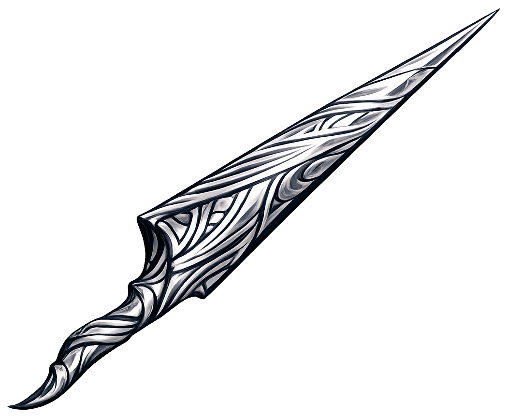
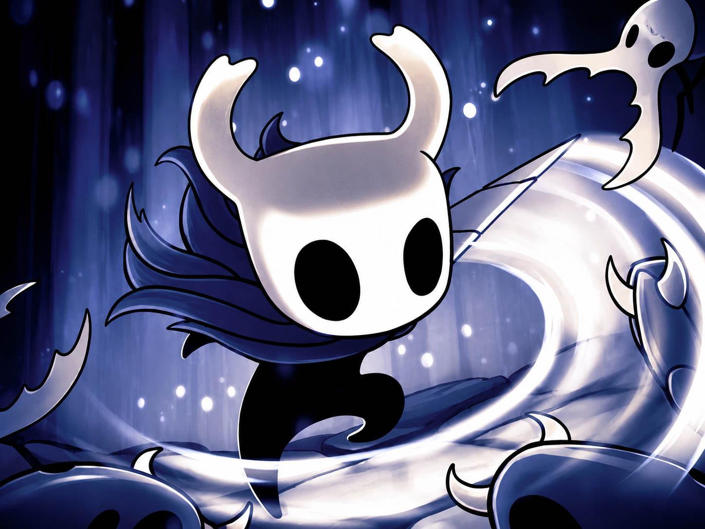

El Aguijón
En Hollow Knight, nuestra arma principal será el aguijón, una arma tipo cuerpo a cuerpo que se puede pegar en las 4 direcciones
(arriba, abajo, izquierda y derecha). Cada vez que la mejoremos mientras avancemos en el juego, más daño logrará hacer. Las mejoras
se podrán hacer en Páramos Fúngicos en el área del Forja Aguijones (se verá más adelante). Es lo que más tendremos que dominar a
la hora de combatir, así que practicar contra enemigos menores atacándolos de todas las direcciones, es lo ideal para ir mejorando.
Consejo: a la hora de hacer un golpe hacia abajo, si estamos sobre pinchos, podremos hacer un parry, el cual tambien funciona con
ciertos enemigos al pegar justo cuando el enemigo ataca.

Artes de Aguijones
En Hollow Knight tambien encontraremos habilidades que nos ayudaran a ser mas "versatiles" algunas de estas Artes son las de los aguijones, las cuales se consiguen explorando por el mapa de hallownest y encontrando a los maestros de los aguijones (Maestros de los aguijones Oro, Mato y Sheo) los cuales nos otorgaran 3 habilidades que nos hacen hacer mucho daño si sabemos usarlas (Corte Ciclón, Gran Corte y Corte Veloz) las cuales se activaran al momento de mantener precionado el boton de ataque y esperar unos segundos, cada habilidad dependera de lo que estes haciendo en el momento.